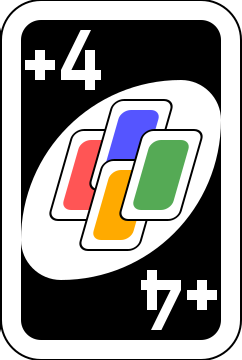

Objetivo: Sé el primero en quedarte sin cartas en la mano. Para deshacerte de
cartas,
debes jugar una que coincida en color, número o símbolo con la carta superior de la pila de descarte.
Inicio del juego: Cada jugador recibe 7 cartas, y se coloca una carta boca arriba
para
iniciar el descarte. En cada turno, los jugadores deben jugar una carta válida o, si no tienen, robar
una carta del mazo.
Cartas especiales: Existen cartas con efectos especiales: Comodín (cambia color),
Comodín +4 (cambia color y obliga al siguiente jugador a robar 4), Cambio de sentido, Salta y +2 (obliga
al siguiente jugador a robar 2).
Decir "DOS" y ganar: Cuando tengas dos cartas restantes, debes decir “DOS”; si no,
podrías recibir una penalización de 2 cartas si te descubren. El juego termina cuando un jugador se
queda sin cartas, y los demás suman puntos según las cartas que les quedan.
